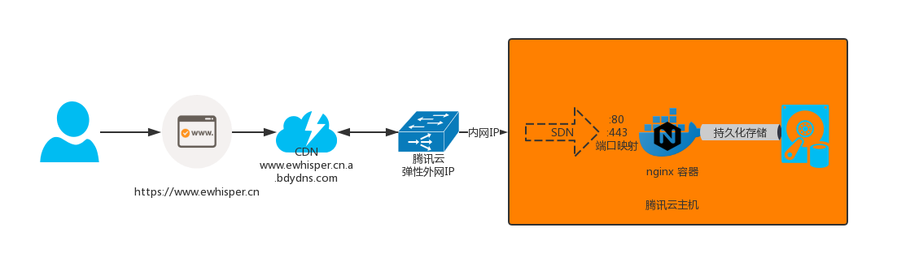
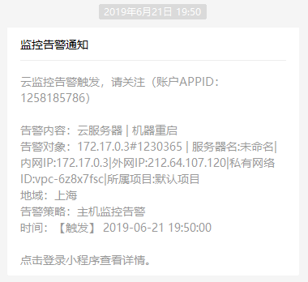
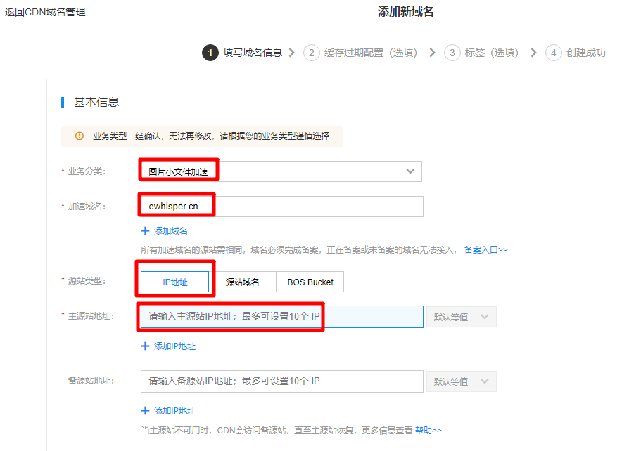
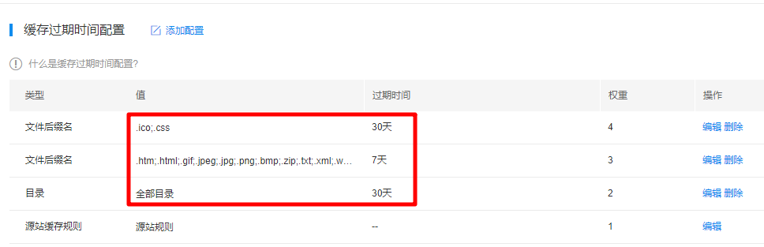
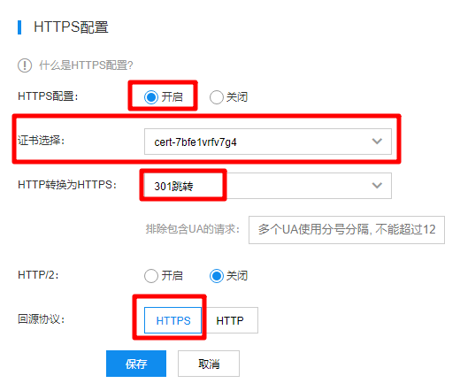
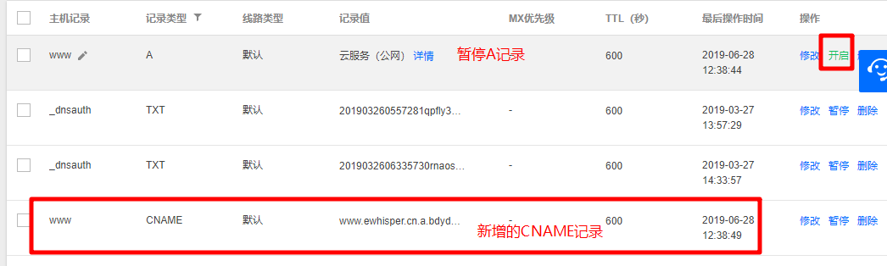
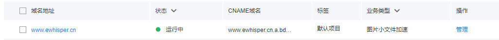

我的个人博客启用CDN啦:tada:
在 2019-06-28 Friday 发布于 DevOps 分类 • 1 min read
2019年6月28日起, 我的个人博客 - https://www.EWhisper.cn 正式启用CDN了! 
数据流向¶
之前的数据流量如下:
用户 -> 域名 -> DNS -> 腾讯云主机外网IP -> 腾讯云主机内网IP -> Docker SDN端口映射(443指向docker的443, 80之下那个docker的80) -> Docker的NGINX容器的 80和443端口
现在加了一层CDN, 如下:
用户 -> 域名 -> CDN -> DNS -> 腾讯云主机外网IP -> 腾讯云主机内网IP -> Docker SDN端口映射(443指向docker的443, 80之下那个docker的80) -> Docker的NGINX容器的 80和443端口

为什么需要CDN¶
备注:
CDN: 中文名 内容分发网络.
痛点¶
我现在的云主机只有5M带宽, 有时就一个人访问页面, 也会触发带宽告警. 如下:

这是因为我的有些文章, 图片太多, 一次性加载就会导致5M带宽瞬间占满.
另外, 由于我购买的是一台上海的腾讯云主机, 那么其他地域或者宽带访问我的网站有时候会比较慢.
CDN作用¶
CDN通常用于以下4个场景:
- 静态资源存储(如图片等. 我是这个场景.)
- 超大文件分发(如安装包等)
- 视频点播
- 视频直播
将网站内容发布到最接近用户的边缘节点，使网民可就近取得所需内容，提高网民访问的响应速度和成功率，同时能够保护源站。解决由于地域、带宽、运营商接入等问题带来的访问延迟高问题，有效帮助站点提升访问速度。
- 访问加速: 我的网站全站都是静态页面, 可以实现静态资源全站加速.
- 节流: 用户大部分访问直接可以通过CDN获取, 我的云主机可以节流.
- 数据监控/分析: 现在CDN往往也会对全网数据进行加农, 提供带宽流量 请求次数等全景数据报表及分析.
如何配置CDN¶
此处以百度云CDN为例, 其他CDN要填写的内容大同小异.
开通CDN服务.¶
我使用的是百度的CDN. 开通很简单, 就是注册账号, 实名认证, 开通...
接入CDN服务¶
-
在CDN控制台，点击“域名管理”，进入“添加新域名”页面。

需要填写的关键信息:
- 业务分类(图片小文件加速);
- 我的博客域名(
); - 源站类型: IP地址(因为就1台机器, IP地址不变);
- 主源站地址: 我的云主机公网IP.
-
点击“下一步”，进入“缓存过期配置”页面。(默认配置就好; 或者把你知道的静态目录和静态文件全缓存了)

-
(选填)填写配置信息，根据实际需求，您可在此步骤完成“缓存过期时间”、“缓存key计算策略”、“防盗链”、“安全防护”和“视频拖拽”的设置，接入CDN时您可以选择缺省配置，完成接入后，可以在控制台进行配置与修改。
-
确认配置无误后请点击“下一步”，页面提示“添加成功”。您可以点击“管理控制台”进行绑定CNAME、域名管理、刷新缓存和资源监控等操作。
-
(选填)因为我启用了全站HTTPS和HSTS, 所以必须配置HTTPS, 配置如下:

- 证书选择: 把申请的证书公钥和私钥导入即可.
- HTTP转换为HTTPS: 301跳转. (永久重定向)
- 回源协议: HTTPS (因为我云主机的nginx开启了HSTS功能, 所以回源就选择HTTPS)
-
你在CDN页面, 会看到你的CDN的CNAME域名, 记下来. 如我的:
-
在云DNS解析页面, 暂停或删除A记录, 增加CNAME记录, 如下:

-
查看CDN域名的状态, 就是运行中. 如下:

-
至此, CDN启用成功. 可以尝试访问页面的静态资源, 会发现响应速度是有所提升.
如何判断CDN是否缓存成功了?¶
- 如果您想要得知访问页面是否缓存，可以使用F12，开发者工具，查看您访问页面的静态资源的源IP，在CDN工具中查看下是否为cdn节点IP，若是就是走的CDN，另外如果消息头中有Age，那么就说明被缓存了.
- 查看消息头中有如下内容:
Ohc-Cache-HIT:应该也是缓存成功了(我猜的 )
) - 或者是看响应头信息中
X-Cache字段, 显示HIT, 就是命中了.
结语¶
启用CDN后, 首屏加载时间明显加快, 用户体验明显得到提升. 快来试一下吧